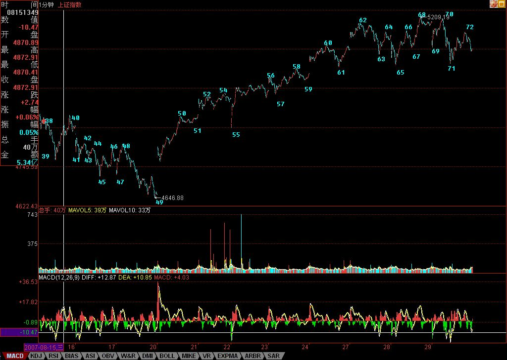

有时候，当乖孩子并不是丢人的事。
2007/8/29 15:54:01
昨天说了，如果美国那破事还能搞一次，可能是化解死局的好选择，昨天美国的大跌，来得够及时。本ID说了，任何和2/3相关的活动，本ID都是乐于见到的。
有时候，当乖孩子并不是丢人的事。今天，那漂亮50，集体耷拉，这是好现象。该休息还是要休息，整天瞎搞，小心精尽人亡。
其他个股，借着漂亮50休息而风起云涌一把，这也是天经地义的事情。
技术上，一个新的、从62开始的5分钟中枢已经基本成型，因此，该中枢的后续走势，决定了短线行情的发展。
说实在话，除了快速突破3/4线直接上攻6000点形成多头陷阱这样一种走势本ID不能接受外，其他任何的走势，本ID都能接受。
说实在，这两年的行情，根本不火暴，比起1996年，简直没法比。那次，1年半就从1000点冲到6000点上，那次表现的是深成指。这次，走了两年多了才到这个位置，乌龟都不如。但现在市场大了，影响大了，婆婆也多了，所以只能这样。
6000点会有的，10000点会有的，30000点也会有的，但不是一天去完成。欲速则不达，有时候当当乖孩子，作乖乖状，又有什么大不了的？何必一定要去挑起不必要的麻烦？
可以很明确地说，如果不是某些努力，昨天早就已经尸横遍野了。有些事情没必要说，只要知道，一切都是合力而成。但有时候，太过分了，那就只有对立面了，把自己逼到墙角，又何必呢？
但目前的市场，成分已经越来越复杂，本ID更相信一件事情，就是任何良好的愿望，在一个市场里，最终都要被践踏的。在现实中，死缓总变有期，在市场里，死缓往往就是绞刑变凌迟，人的贪婪总有最大的疯癫基因。
最后说句闲话，发现很多人对分段的第二种情况还是没搞清楚，例如下图中的62-63，就是一个典型的第二种情况，各位请好好研究一下。
最近整天下午晚上都泡在北京那几个高新园区那里看项目、谈项目，有点忙，不能和各位聊天了。
先下，再见。
